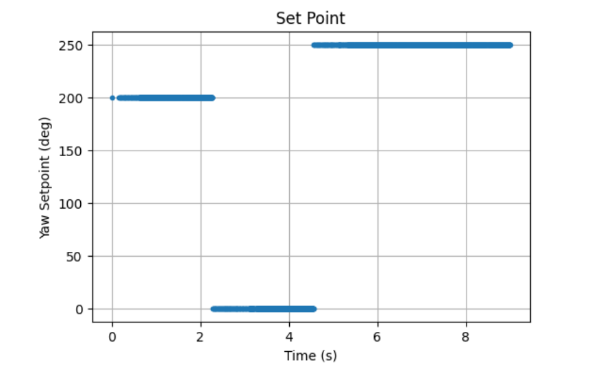
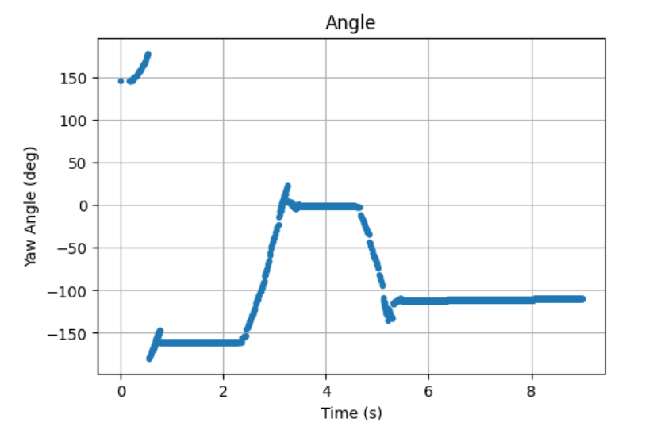
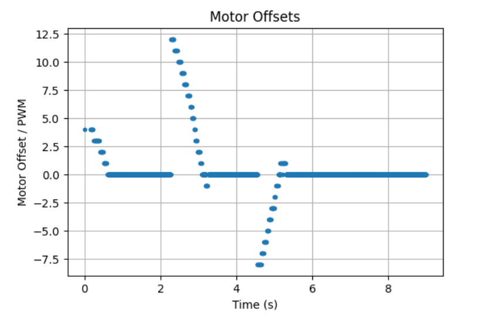

ECE 4160 – Fast Robots
The purpose of this lab was to set up oriental control on the robot and to get more experience with PID control.
I estimated the robot’s orientation by integrating the gyroscope’s angular velocity over time, but this method can drift because small noise, timing error, and sensor bias accumulate during digital integration. The gyroscope can also have a nonzero offset even when the robot is stationary, so the angle error tends to grow over time unless the bias is calibrated out at startup. To reduce this drift, I decided to use the IMU’s onboard Digital Motion Processor (DMP), which performs sensor processing internally and gave me a more stable yaw estimate for control. Another limitation is the sensor’s maximum measurable rotation rate: the ICM-20948 gyroscope can be configured to ±250, ±500, ±1000, or ±2000 deg/s, and 2000 deg/s is more than sufficient for this robot’s turning speeds. I didn't implement functionality for controlling the orientation along with driving forward/backward in this lab, however I plan to implement this in the future by having each iteration of the loop update add the pwm value needed to turn to the pwm value needed to move forward/backwards. After this I can rescale the number and should have a pwm value that will help the robot rotate while moving forward/backward. For stunts I will probably need the capability to update the setpoint in real time which shouldn't be too dificult since I already implemented a BLE command to update this.
Because my feedback signal already comes from integrating angular velocity, taking a derivative term would amount to differentiating a value that is itself noisy and drift-prone, which would likely amplify measurement noise rather than improve control. Using only PI avoided derivative kick when I changed the setpoint during runtime, since there was no derivative term reacting sharply to a sudden setpoint jump. For the same reason, I did not need a low-pass filter on a derivative term, since my controller did not use one.
Due to having already setup PI control in the previous lab, I was able to make adjustements and reuse a lot of the same code for this lab. I first started by adding two new commands "START_CAR_TURNING" which needs to be run before the car sarts to turn to the set point and "SET_YAW_SETPOINT" which allows me to send BLE commands that change the set point of the car so I wouldn't need to compile new code each time. I then sent over the data with the same "SEND_PID_DATA" command however I edited it to support my yaw setpoint functionality. I also added new variables and arrays to keep track of the data that would be useful to send over to my computer. This included the yaw position, the yaw position with extrapolation, and the desired yaw setpoint at any time.
case SET_YAW_SETPOINT:
float new_setpoint;
success = robot_cmd.get_next_value(new_setpoint);
if (!success) return;
yaw_setpoint = new_setpoint;
break;
case START_CAR_TURNING:
char car_move[MAX_MSG_SIZE];
success = robot_cmd.get_next_value(car_move);
if (!success)
return;
if (strcmp(car_move, "forward") == 0) {
run_car_turn = false;
run_car_forward = true;
} else if (strcmp(car_move, "turn") == 0) {
run_car_turn = true;
run_car_forward = false;
}
break;
I first set up DMP using the example code from the ICM-20948 library along with the class page on DMP. I decided that this was important because it would simplify my work in the future if I could get more accurate data improving my controls.
I then essentially used the same structure (with extrapolation) in my loop as for lab5 to do the oriental control
if (run_car_turn) {
float pos = -1000.0f;
time_arr_imu[pid_counter] = millis();
yaw_setpoint_log[pid_counter] = yaw_setpoint;
if (update_yaw_dmp()) {
pos = yaw_dmp;
yaw_pos_we[pid_counter] = pos;
yaw_pos[real_val_counter] = pos;
time_arr_imu_real[real_val_counter] = millis();
SERIAL_PORT.println(pos);
real_val_counter += 1;
}
if (pos == -1000.0f) {
if (real_val_counter < 2) {
if (real_val_counter == 1) {
pos = yaw_pos[0];
} else {
pos = 0.0f;
}
yaw_pos_we[pid_counter] = pos;
} else {
float dy = angle_diff(
yaw_pos[real_val_counter - 1],
yaw_pos[real_val_counter - 2]
);
float dt_real = float(
time_arr_imu_real[real_val_counter - 1] -
time_arr_imu_real[real_val_counter - 2]
);
float slope = 0.0f;
if (dt_real > 0) {
slope = dy / dt_real;
}
float time_elapsed = float(
time_arr_imu[pid_counter] -
time_arr_imu_real[real_val_counter - 1]
);
pos = yaw_pos[real_val_counter - 1] + slope * time_elapsed;
pos = wrap_angle(pos);
yaw_pos_we[pid_counter] = pos;
}
}
SERIAL_PORT.print(pos);
SERIAL_PORT.print(",");
int pwm_val = yaw_pi_value(pos, yaw_setpoint);
SERIAL_PORT.print(",");
SERIAL_PORT.println(pwm_val);
pwm_val = constrain(pwm_val, -150, 150);
pwm_data[pid_counter] = pwm_val;
int updated_pwm;
if (abs(pwm_val) == 0) {
analogWrite(motorL1, 0);
analogWrite(motorL2, 0);
analogWrite(motorR1, 0);
analogWrite(motorR2, 0);
}
else if (pwm_val > 0) {
updated_pwm = map(pwm_val, 0, 160, 100, 160);
// one direction
analogWrite(motorL1, 0);
analogWrite(motorL2, updated_pwm*1.6);
analogWrite(motorR1, 0);
analogWrite(motorR2, updated_pwm*1.35*1.6);
}
else {
updated_pwm = map(-pwm_val, 0, 150, 100, 150);
// opposite direction
analogWrite(motorL1, updated_pwm*2);
analogWrite(motorL2, 0);
analogWrite(motorR1, updated_pwm*1.35*1.6);
analogWrite(motorR2, 0);
}
pid_counter += 1;
if (pid_counter >= N) {
car_is_on = false;
analogWrite(motorL1, 0);
analogWrite(motorL2, 0);
analogWrite(motorR1, 0);
analogWrite(motorR2, 0);
}
}
I used these helper functions update_yaw_dmp to get the latest orientation estimate from the IMU's DMP as well as yaw_pi_value to output the pwm value needed for a given pos and yaw_setpoint (very similar to my helper function from lab5)
bool update_yaw_dmp() {
yaw_dmp_valid = false;
icm_20948_DMP_data_t data;
do {
myICM.readDMPdataFromFIFO(&data);
if ((myICM.status != ICM_20948_Stat_Ok) &&
(myICM.status != ICM_20948_Stat_FIFOMoreDataAvail)) {
return false;
}
if ((data.header & DMP_header_bitmap_Quat6) > 0) {
double q1 = ((double)data.Quat6.Data.Q1) / 1073741824.0;
double q2 = ((double)data.Quat6.Data.Q2) / 1073741824.0;
double q3 = ((double)data.Quat6.Data.Q3) / 1073741824.0;
double q0_sq = 1.0 - (q1*q1 + q2*q2 + q3*q3);
if (q0_sq < 0.0) q0_sq = 0.0;
double q0 = sqrt(q0_sq);
double siny_cosp = 2.0 * (q0 * q3 + q1 * q2);
double cosy_cosp = 1.0 - 2.0 * (q2 * q2 + q3 * q3);
yaw_dmp = atan2(siny_cosp, cosy_cosp) * 180.0 / M_PI;
yaw_dmp = wrap_angle(yaw_dmp);
yaw_dmp_valid = true;
}
} while (myICM.status == ICM_20948_Stat_FIFOMoreDataAvail);
return yaw_dmp_valid;
}
int yaw_pi_value(float current_yaw, float desired_yaw) {
unsigned long current_time = millis();
float dt = (current_time - prev_time_yaw_pi) / 1000.0f;
if (prev_time_yaw_pi == 0) {
dt = 0.0f;
}
float error = wrap_angle_error(desired_yaw, current_yaw); //another helper function used (purpose of keeping the angles withing the range 0 to 360)
if (dt > 0) {
yaw_error_integral += error * dt;
yaw_error_integral = constrain(yaw_error_integral, -100.0f, 100.0f);
}
float control_signal = kp * error + ki * yaw_error_integral;
prev_time_yaw_pi = current_time;
return constrain((int)control_signal, -255, 255);
}
I then collected the values in python in a similar way to lab5.
pid_index_a = []
time_arr_imu_a = []
time_arr_imu_real_a = []
yaw_pos_we_a = []
yaw_pos_a = []
pwm_data_a = []
yaw_setpoint_log_a = []
real_count = []
def collect_pid_data_turn(sender, byte_array):
line = ble.bytearray_to_string(byte_array).strip()
parts_a.append(line)
parts = line.split(",")
if len(parts) != 8:
return
i, t_loop, t_real, yaw_est, yaw_real, pwm, yaw_setpoint, real = parts
pid_index_a.append(int(i))
time_arr_imu_a.append(float(t_loop))
time_arr_imu_real_a.append(float(t_real))
yaw_pos_we_a.append(float(yaw_est))
yaw_pos_a.append(float(yaw_real))
pwm_data_a.append(float(pwm))
yaw_setpoint_log_a.append(float(yaw_setpoint))
real_count.append(int(real))
ble.start_notify(
ble.uuid['RX_STRING'],
collect_pid_data_turn
)
For this lab, the controller used a sampled digital feedback loop, with the elapsed time dt computed from millis() at each iteration. Because the loop also handled BLE communication, DMP/FIFO updates, and other processing, the sampling interval was not perfectly constant, but it was still fast enough for stable orientation control. In terms of range, the yaw estimate was wrapped to a bounded angular interval, and I used angle-wrapping helper functions so that errors near the ±180° boundary were handled correctly. The IMU’s rotational measurement range was also more than sufficient for the robot’s turning speeds, so sensor range limits were not a practical issue in this experiment.
I then tested this code and ran different values on the python side for the yaw position to change the cars orientation.
Here are plots of the set point, angle, and motor offsets all with respect to time:



Finally I tested picking the car up and moving its orientation and watching it have to readjust itself. My kp and ki values (kp = 0.076, ki = 0.0002) worked very well, and while they produced some overshoot they allowed the car to reach the desired orientation extremely quickly. Lower vales caused the car to not overshoot the position as much but didn't produce the speed that I will likely want for future stunts.